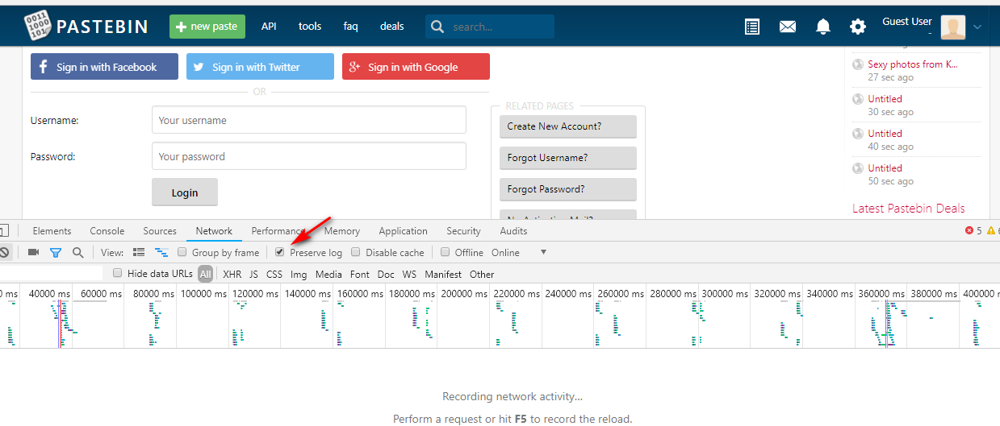
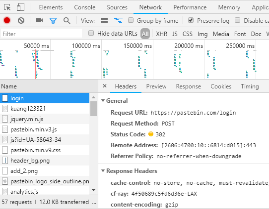
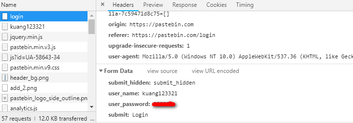

原文出处:本文由博客园博主ktkt提供。
原文连接:https://www.cnblogs.com/legend-123/p/11175550.html
原文连接:https://www.cnblogs.com/legend-123/p/11175550.html
任务
在https://pastebin.com网站注册一个账号，利用python实现用户的自动登录和创建paste。该任务需要分成如下两步利用python实现：
- 账号的自动登录
- paste的自动创建
模拟账号登录
模拟登录，需要知道登录的URL是什么，那么登录URL怎么去看呢。
进入https://pastebin.com/之后，发现是以访客的身份进入的，点击身份图像的下拉中的LOGIN，进入登录页面，打开Chrome开发工具，选择Network，勾选Preserve log：

输入用户名和密码，登录进去后，如下图：

这样就找到了需要提交的请求是什么，包括url，请求方法，提交的数据。POST请求是以什么格式提交的数据呢，在Request Header头部可以找到"content-type": "application/x-www-form-urlencoded"，这个需要注意，因为经常遇到的还有一种提交形式叫"application/json"。
在用requests post提交请求的时候，如果是form表单形式传送，则将数据传入data参数，如果是以json格式传送，则需要将数据传入json参数。
登录之后，点击API菜单，可以从页面中 获取一个api_dev_key，后面实现自动创建paste的时候需要用到。


import requests
from lxml import etree
# 登录 https://pastebin.com/
login_url = "https://pastebin.com/login"
username = "kuang123321"
password = "xxxxxx"
api_dev_key = "4f45a996aa78079d8f7d14f104c45893"
session = requests.Session()
form_data = {
"submit_hidden": "submit_hidden",
"user_name": username,
"user_password": password,
"submit": "Login"
}
headers = {"content-type": "application/x-www-form-urlencoded"}
res = session.post(login_url, data=form_data, headers=headers)
print(res.status_code, res.url)
# 获取 api_dev_key
api_url = "https://pastebin.com/api"
text = session.get(api_url).content.decode("utf-8")
html = etree.HTML(text)
target_divs = html.xpath('//*[@id="content_left"]/div[9]/div/text()')
if target_divs:
api_dev_key = target_divs[0]
print(api_dev_key)
else:
raise Exception("cannot find api_dev_key")